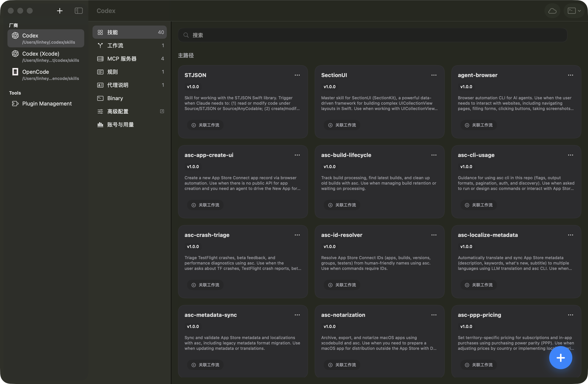
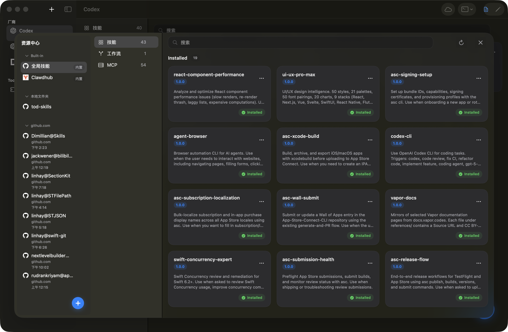
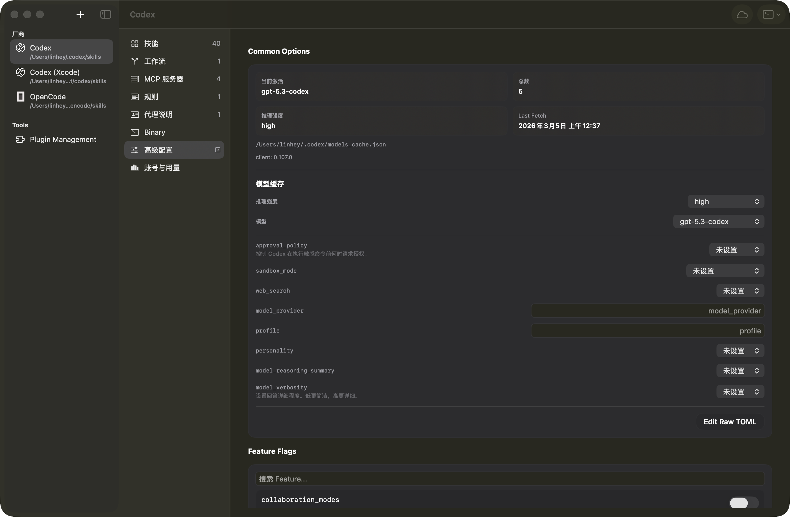
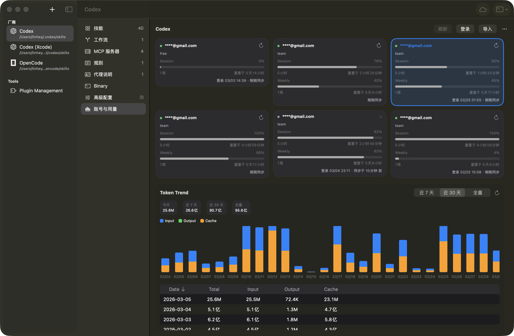

Skills
统一管理技能资产并投射到目标 Provider。
Nolon 把资源编排、远程安装和 Codex 工作流统一在 macOS 主界面中，让协作更快且更可控。
从下载到日常使用，只保留必要动作。
从 Release 下载最新版本，首次启动后进入主控制台。
按已支持模板接入 Skills / Workflows / MCP 资源。
在主控制台统一查看、安装、切换与诊断，减少重复操作。
左侧选择 Provider，中间切换任务视图，右侧查看细节状态，路径固定更易维护。

把分散资源集中到一条安装路径，减少跨工具手工配置。
统一管理技能资产并投射到目标 Provider。
安装工作流并保持本地与远程一致。
安装与配置 MCP 资源，减少手工配置错误。

先用统一底座收敛复杂度，再按 Provider 与工具能力做可控扩展。
内置模板覆盖 7+ Provider，按能力动态呈现可用视图。
账号、用量、二进制和高级配置集中在同一控制面板。
插件位于 Tools 独立页面，支持 XcodeMCPKit 等能力扩展。


核心能力优先下沉为可复用模块，避免 App 层重复造轮子。
迁移助手、链接修复和漂移治理共同保障长期可维护性。
默认从 GitHub Releases 获取最新稳定版，应用内更新由 Sparkle appcast 提供。
发布入口，适合手动下载与版本核对。
前往 GitHub应用内更新源，适合持续跟进稳定版本。
查看 Appcast